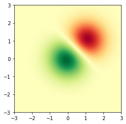

Análise 2¶
Página análise 2¶
import altair as alt
from altair.expr import datum
from vega_datasets import data
stocks = data.stocks.url
base = alt.Chart(stocks).encode(
x='date:T',
y='price:Q',
color='symbol:N'
).transform_filter(
datum.symbol == 'GOOG'
)
base.mark_line() + base.mark_point()
import numpy as np
import matplotlib.cm as cm
import matplotlib.pyplot as plt
import matplotlib.cbook as cbook
from matplotlib.path import Path
from matplotlib.patches import PathPatch
delta = 0.025
x = y = np.arange(-3.0, 3.0, delta)
X, Y = np.meshgrid(x, y)
Z1 = np.exp(-X**2 - Y**2)
Z2 = np.exp(-(X - 1)**2 - (Y - 1)**2)
Z = (Z1 - Z2) * 2
fig, ax = plt.subplots()
im = ax.imshow(Z, interpolation='bilinear', cmap=cm.RdYlGn,
origin='lower', extent=[-3, 3, -3, 3],
vmax=abs(Z).max(), vmin=-abs(Z).max())
plt.show()

A = np.random.rand(5, 5)
fig, axs = plt.subplots(1, 3, figsize=(10, 3))
for ax, interp in zip(axs, ['nearest', 'bilinear', 'bicubic']):
ax.imshow(A, interpolation=interp)
ax.set_title(interp.capitalize())
ax.grid(True)
plt.show()